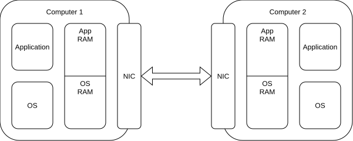
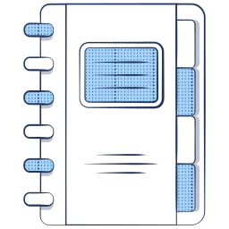
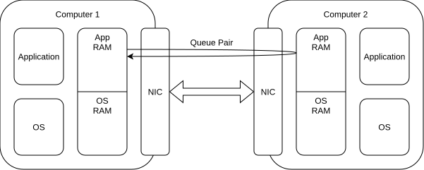
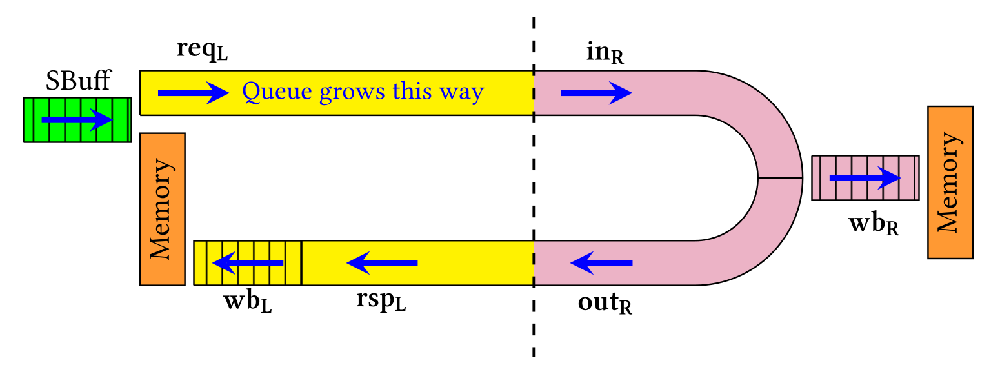
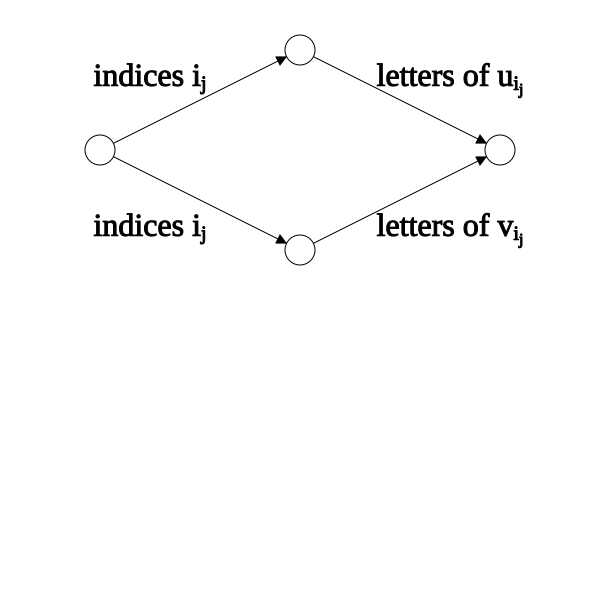

On the Verification Problem
of RDMA programs
(Remote Direct Memory Access)
Stephan Spengler
Uppsala University, Sweden
July 2026




x = 1
y = 0
z = 0
w = 1
P ::= skip | P1 ; P2 | P1 + P2 | P*
| x := vw | assume(x == vr)
| x := | := x
| rfence() | poll()

x = 1
y = 0
z = 0
w = 1
nrR(w, 1) lW(x, 2) nlR(x, 2) nrW(z, 2) nlW(y, 1)
nrR(w, 1) nlR(x, 1) nrW(z, 1) nlW(y, 1)
nrR(w, 1) nlW(y, 1) nlR(x, 1) nrW(z, 1)
nrR(w, 1) lW(x, 2) nlW(y, 1) nlR(x, 2) nrW(z, 2)
nrR(w, 1) lW(x, 2) nlR(x, 2) nrW(z, 2) nlW(y, 1)
⇓
nrR(w, 1) lW(x, 2) nlW(y, 1) nlR(x, 2) nrW(z, 2)
nrR(w, 1) lW(x, 2) nlW(y, 1) nlR(x, 2) nrW(z, 2)